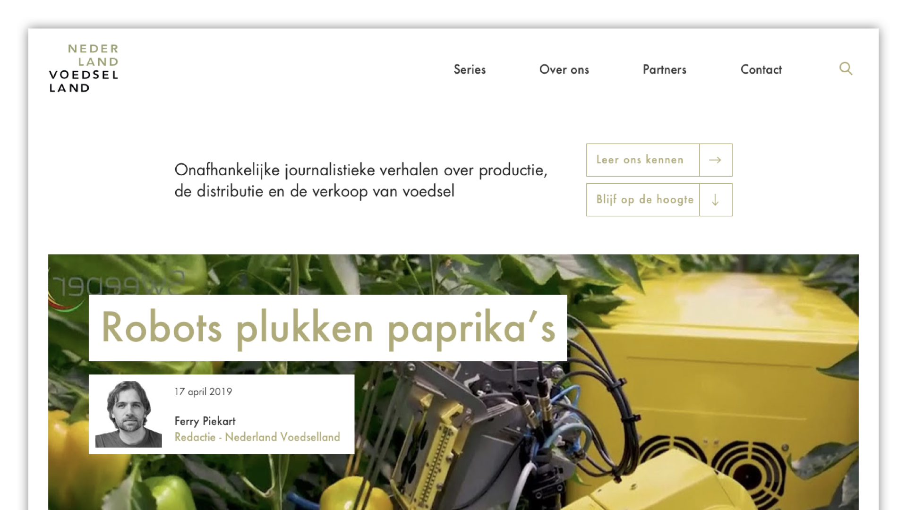
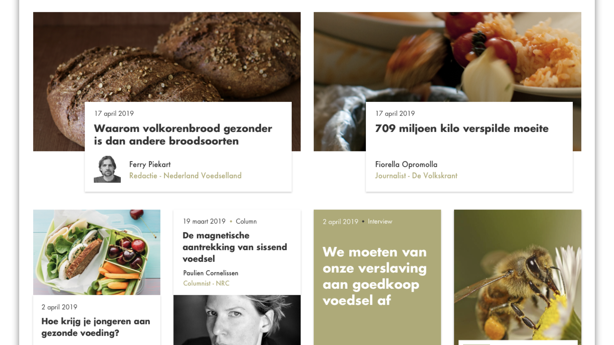

There are a lot of myths going around about the food that we eat. Nederland Voedselland sheds light on the food industry, either busting or confirming these myths. I looked at ways to introduce hierarchy to their homepage and showcase all articles in a clearer way.
Nederland Voedselland was clear about one thing: they wanted to stop putting titles over pictures. This increased the risk of either the titles becoming illegible, or the images becoming obscured behind the title. I chose to put a white background behind the text, saving enough room for an author's name and portrait.
The grid of the new page allowed Nederland Voedselland to place either one large, two half-sized or four small article links in a row. These different sizes had to remain recognizable. I played around with the placement of all article elements, sometimes adding and sometimes forfeitting them to retain the breathability of the design.
After I worked on Nederland Voedselland, the website underwent some iterations. The website is online and can be viewed on nederlandvoedselland.nl.